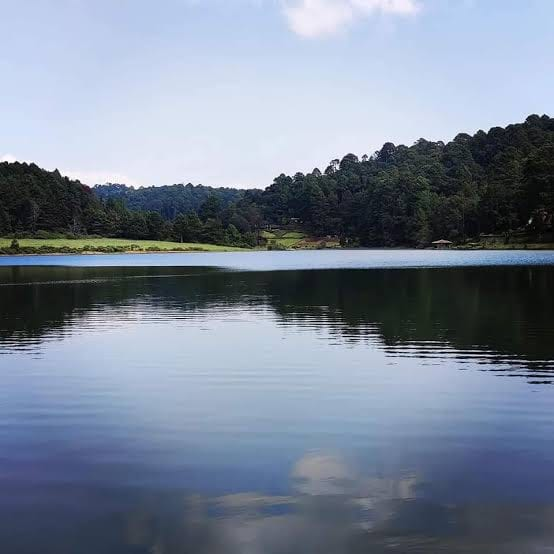

La Laguna Negra que suele promocionarse como parte de Valle de Bravo en realidad pertenece al municipio de Otzoloapan (en los límites con Zacazonapan), dentro de la localidad conocida como Pinal del Marquesado, en el Estado de México.
Debido a su cercanía con la zona de Avándaro y Villa de Colorines, los operadores turísticos la incluyen en sus recorridos por Valle de Bravo.
Senderismo y ciclismo. Es un punto popular para practicar senderismo, trail running y ciclismo de montaña. Destacan rutas como el Circuito Laguna Negra (de unos 10 km y dificultad moderada) o los recorridos que conectan hacia el paraje de Los Pozos.
